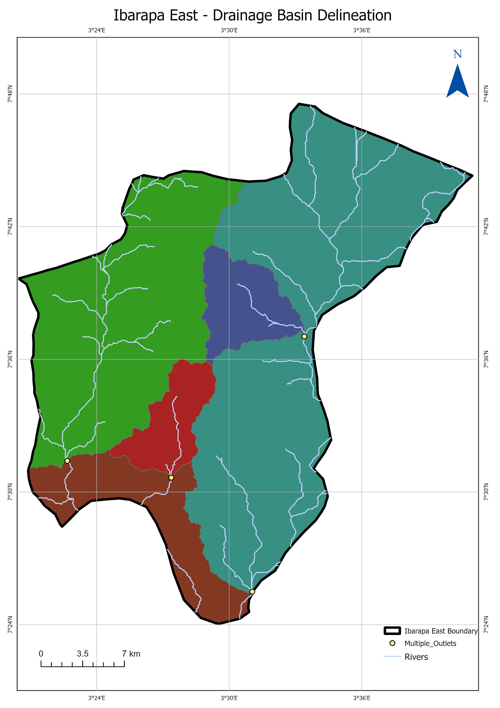

A self-directed exercise in DEM-based hydrological analysis: delineating the sub-basins and stream network of Ibarapa East from raw elevation data, start to finish, in ArcGIS Pro.
Watershed delineation is one of those GIS skills that's easy to follow in a tutorial and harder to actually own — so this was a deliberate practice run: take a raw Digital Elevation Model with no pre-processing, and work all the way through to a clean, presentable basin map with no assignment brief telling me the steps. The area of interest is Ibarapa East, a local government area in Oyo State, Nigeria.
Elevation data came from the SRTM DEM, downloaded through USGS EarthExplorer and clipped to the Ibarapa East boundary and its surrounding catchment. From there, the analysis followed ArcGIS Pro's standard hydrology workflow:

Replace this with your own reflection — for example, whether you'd compare the SRTM-derived stream network against mapped rivers to check delineation accuracy, calculate basin area and stream order for each sub-basin, or test how the result changes with a different flow accumulation threshold.